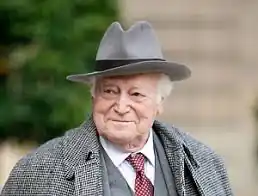

Моріс Дрюон народився 23 квітня 1918 року в Парижі, Франція. Французький письменник, член Французької академії з 1967 року.
Син актора Лазаря Кесселя (20 травня 1899—1920), вихідця з Оренбурга, який разом з сім'єю в 1908 році залишив Росію і переїхав до Ніцци, де грав під акторським псевдонімом Сібе́р, але наклав на себе руки у віці 21 року.
Моріс прийняв прізвище свого вітчима Р. Дрюона. Вперше почав публікуватися у вісімнадцятирічному віці. З 1937 по 1939 рік — студент факультету політичних наук Паризького університету. Після закінчення в 1940 році військової школи в місті Сомюр отримав військове звання офіцера кавалерії. Моріс Дрюон брав участь у боях захисту Франції від фашистів. Після поразки Франції демобілізувався і залишився в неокупованій зоні. Брав участь у Французькому Опорі. У 1942 році інкогніто через Іспанію і Португалію перебрався до Лондона, де приєднався до створеного Шарлем де Голлем руху "Вільна Франція". Став одним з його близьких соратників. Займався у штабі питаннями інформації. Одночасно був фронтовим кореспондентом французьких і союзницьких військ. Вчився на літературному факультеті в Парижі. Дрюон вирішив повністю присвятити себе літературі в 1946 році. У 1948 році опублікований перший великий твір письменника — "Сильні світу цього", за який у тому ж році він був удостоєний престижної Гонкурівської премії. У 1966, 1998 і 2000 роках за успіхи в літературній творчості удостоєний премій Принца Монако, Сен-Симона і д'Обіне, відповідно. Від 1967 року Моріс Дрюон — член Французької академії. У 1973-74 роках письменник обіймав посаду міністра культури Франції в уряді Жоржа Помпіду, а у період 1978 по 1981 роки працював депутатом у міських зборах Парижа. Був депутатом Національних зборів країни і Європарламенту. Протягом 14 років Дрюон займав посаду постійного секретаря Французької академії. З 2007 року він був найстаршим із обранців Французької Академії, що відає питаннями розвитку літератури і різних видів мистецтва, виданням академічного словника. Моріс Дрюон став одним з 75 володарів Великого хреста ордена Почесного легіону — вищої державної нагороди Франції. Удостоєний високих державних нагород Аргентини, Бельгії, Бразилії, Великої Британії, Греції, Італії, Лівану, Марокко, Мальти, Мексики, Монако, Португалії, СРСР (орден Дружби народів), Росії, Сенегалу, Тунісу. Помер 14 квітня 2009 року. Похований у своєму маєтку — абатстві Фез, що в місті Лез-Артіг-де-Люссак.